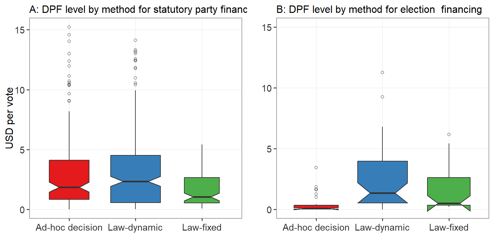
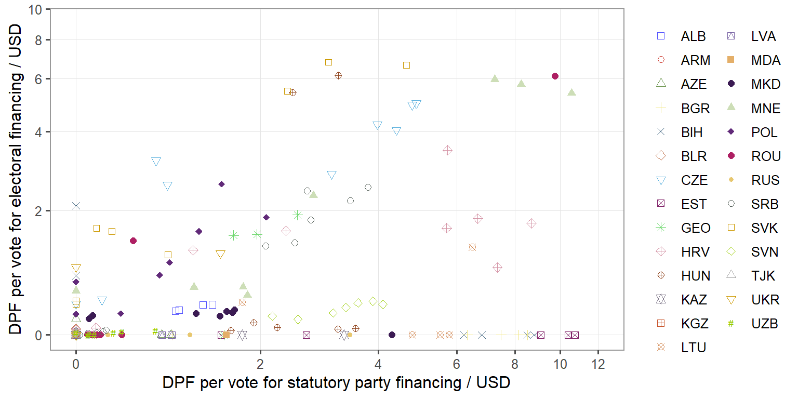

![]()

Direct public funding of political parties: between proxy measures and hard data (1)
public funding of parties
hard data
post-communist regimes
In this blogpost I analyse the development of public funding regimes in postcommunist polities
This overview represents a brief and somewhat technical discussion of my article published in Party Politics concerning the validity and reliability of various proxy measures of political financing regulations (PFR) and direct public funding (DPF) of political parties (Lipcean, 2021). Scholars commonly employ such proxies to assess their impact on political competition, party system stability, emergence and success of new parties, or political corruption. However, one legitimate concern relates to the suitability of these measures to investigate and gauge the effect of party and campaign funding rules on the phenomena and processes mentioned above. Another justified concern touches on the extent to which these proxies reflect the content of PFR.
Considering that the money-politics relationship in contemporary democracies became a vividly debated topic, these concerns are not trivial. Therefore, when researchers develop and use such measures and make policy recommendations on the direction of political finance reforms based on their findings, it is paramount that they reflect the lay of the land of PFR. Moreover, the performance of such proxies in capturing the nature of PFR is particularly relevant since, in most cases, political finance reforms are designed to level the playing field among electoral competitors, minimise the risk of corruption or undue influence on policy-making via party and campaign contributions. Hence, the way how researchers arrive at conclusions regarding the best tools to address the democratic malaise stemming from the disproportionate influence of vested interests on the decision-making process is crucial for the validity of their findings and recommendations.
In a nutshell, I argue that when it comes to large-N cross-national studies assessing the effect of PFR/DPF on political competition or corruption, unfortunately, scholars mostly resort to proxy measures that do not capture the reality and complexity of PFR accurately. Thus, such measures are not as good as they could be, given the actual content of PFR. This limitation is determined by the overwhelming reliance on what I call regulatory scope. By contrast, I argue that besides regulatory scope, one also needs to look at regulatory intensity or depth.
To understand the difference between the two, I provide a simple example, which will illustrate my point. For instance, when someone analyses the impact of donations or public funding of political parties on corruption or the impact of campaign spending limits on the electoral playing field through the lenses of regulatory scope, she will only consider whether there are (or not) donation and spending limits or whether the state provides (or not) public funds to parties or candidates. Conversely, the focus on regulatory intensity goes further. It is concerned with how much a donor can contribute, a party or candidate can spend, or public funds are granted to political parties to alleviate their fundraising burden. Although the advantages of regulatory intensity against the regulatory scope are self-evident, the former is rarely used in large-N cross-national research on party funding.
Below, I provide an illustration based on my dataset on direct public funding of political parties covering 27 post-communist regimes over three decades of transition 1990-2020.1 Hence, I will go through a few indicators to illustrate that regulatory scope is insufficient to understand how permissive a PFR is in limiting the manoeuvring room of political parties and candidates to amass and spend money for their regular or campaign activities. Most charts are adapted based on the article’s figures.
Before that, however, I will illustrate that post-communist polities used various methods to determine the level of state subsidies. The choice of a given method might affect the predictability of institutional settings within which political competition occurs. Likewise, it might affect the discretion of political office holders to manipulate the rules in their favour in terms of amount, access and distribution of state funding. More stable and predictable rules on public funding create more equal conditions for electoral competition. By contrast, the lack of or vague regulation enables incumbents to manipulate the allocation mechanism more easily to achieve their electoral goals. Hence, based on the method of determining the level of direct state support to parties, post-communist polities can be clustered into three generic categories based on:
- The DPF level is fixed by electoral or party law, which means that the law indicates explicitly how much of taxpayers money flow into party pockets and how it is distributed based on electoral results reflected by the vote or seat share. I label this method as Law-fixed.
- The DPF level is foreseen by electoral or party law, but unlike the previous case, the law ties the DPF level to a flexible indicator such as the wage level, budgetary revenues, expenses, or GDP. I label this method as Law-dynamic.
- The DPF level is set based on ad-hoc decisions yearly, usually through the budgetary process. Finally, I label it as an Ad-hoc decision
Figure 1 illustrates the DPF level by method and activity type. The boxplot width shows the number of observations, which means that in most cases, post-communist regimes opted to set the DPF level based on a dynamic economic indicator. Likewise, this method seems to be associated with the most generous funding, although for the statutory party financing, those countries that employed an ad-hoc method provided, alike, quite generous state funding to parties.
Another shortcoming of regulatory scope is that it cannot account for the variation in DPF when the state provides subsidies for party statutory and election activities. Generally speaking, there are three scenarios in this respect: the state grants subsidies, either for party routine operations or electioneering activities, or both. Yet, the amount of budgetary resources allotted for each type might differ substantially. For instance, the government could provide regular and election subsidies, albeit the total support might still be minimal. Conversely, the aggregate funding might be very generous even though only one subsidy type is granted.
Figure 2 illustrates well this situation. It shows the relationship between the subsidy level for party statutory and election activities. As one may notice, all scenarios are present in different combinations. In some cases, like Montenegro and the Czech Republic, both kinds of subsidies are generous. In others, such as Estonia, Bulgaria or Slovenia, statutory funding has precedence over election financing. By contrast, election funding has priority over regular financing in Slovakia and, more recently, in Hungary.

Besides the failure to capture these differences, any proxy measure reflecting only the regulatory scope will also fail to account for within-country variation in public funding. Hence, a subsidy increase or decrease over time will remain unnoticed by a dichotomous indicator (0 – absence of subsidies, 1 – presence of subsidies) or a composite measure including public funding. For instance, the changes in the level of state support might affect the incentive structure of political parties or candidates to engage in corruption. To understand the risks of relying on the regulatory scope alone, Figure 3 presents the public funding evolution and change over time from the early ’90 until 2020. Once again, data reveal a tremendous cross-national and within-country variation.

The purpose of this brief sketch was to warn about the risks entailed by the reliance on various proxies used in comparative research on party finance. As data shows, such proxies are inaccurate and biased in reflecting the actual amount of budgetary subventions provided by the state to political parties, which also applies to other dimensions of political financing such as donation and spending limits. In the next part I will show how alternative proxies such as expert evaluations cannot replace objective indicators.
References
Lipcean, S. (2021). Direct public funding of political parties: Between proxy measures and hard data. Party Politics. https://doi.org/10.1177/13540688211037302
Footnotes
If you want to replicate figures in this post, please use this data
dpf_dataset.csvalong with the R code.↩︎